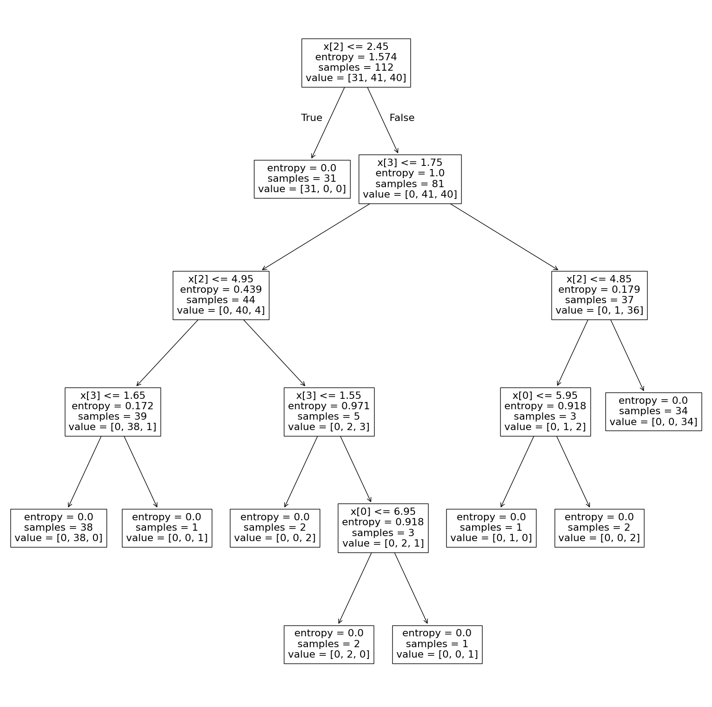
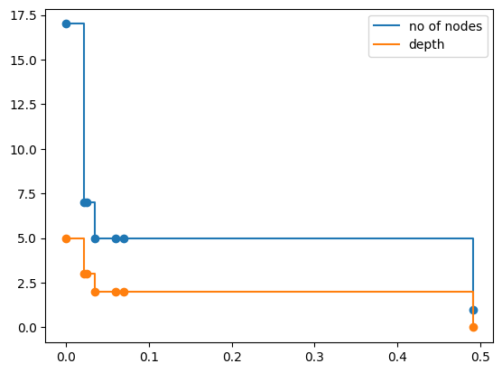

Codificación de variables categóricas
import pandas as pd
# Datos de la tabla
data = {
'Edad': [25, 35, 45, 23, 50, 30],
'Salario': [50000, 60000, 80000, 40000, 90000, 70000],
'Estado Civil': ['Soltero', 'Casado', 'Casado', 'Soltero', 'Casado', 'Soltero'],
'Casa Propia': ['No', 'Sí', 'Sí', 'No', 'Sí', 'Sí'],
'Tomó Préstamo': ['Sí', 'Sí', 'Sí', 'No', 'Sí', 'No']
}
# Crear el DataFrame
df = pd.DataFrame(data)
df
| Edad | Salario | Estado Civil | Casa Propia | Tomó Préstamo | |
|---|---|---|---|---|---|
| 0 | 25 | 50000 | Soltero | No | Sí |
| 1 | 35 | 60000 | Casado | Sí | Sí |
| 2 | 45 | 80000 | Casado | Sí | Sí |
| 3 | 23 | 40000 | Soltero | No | No |
| 4 | 50 | 90000 | Casado | Sí | Sí |
| 5 | 30 | 70000 | Soltero | Sí | No |
# codificación one hot
from sklearn.preprocessing import OneHotEncoder
encoder = OneHotEncoder()
encoded_data = encoder.fit_transform(df[['Estado Civil', 'Casa Propia', 'Tomó Préstamo']])
# Crear un DataFrame con los datos codificados
encoded_df = pd.DataFrame(encoded_data.toarray(), columns=encoder.get_feature_names_out(['Estado Civil', 'Casa Propia', 'Tomó Préstamo']))
# Combinar el DataFrame original con el DataFrame codificado
df_final = pd.concat([df[['Edad', 'Salario']], encoded_df], axis=1)
# Mostrar el DataFrame final
print(df_final)
Edad Salario Estado Civil_Casado Estado Civil_Soltero Casa Propia_No \
0 25 50000 0.0 1.0 1.0
1 35 60000 1.0 0.0 0.0
2 45 80000 1.0 0.0 0.0
3 23 40000 0.0 1.0 1.0
4 50 90000 1.0 0.0 0.0
5 30 70000 0.0 1.0 0.0
Casa Propia_Sí Tomó Préstamo_No Tomó Préstamo_Sí
0 0.0 0.0 1.0
1 1.0 0.0 1.0
2 1.0 0.0 1.0
3 0.0 1.0 0.0
4 1.0 0.0 1.0
5 1.0 1.0 0.0
# codificación ordinal
from sklearn.preprocessing import OrdinalEncoder
df2 = df.copy()
df2 = df2.drop(['Edad','Salario'],axis=1)
enc = OrdinalEncoder()
enc.fit(df2)
OrdinalEncoder()In a Jupyter environment, please rerun this cell to show the HTML representation or trust the notebook.
On GitHub, the HTML representation is unable to render, please try loading this page with nbviewer.org.
OrdinalEncoder()
enc.categories_
[array(['Casado', 'Soltero'], dtype=object),
array(['No', 'Sí'], dtype=object),
array(['No', 'Sí'], dtype=object)]
# codificando
enc.transform(df2)
array([[1., 0., 1.],
[0., 1., 1.],
[0., 1., 1.],
[1., 0., 0.],
[0., 1., 1.],
[1., 1., 0.]])
# Datos de la tabla
datanew = {
'Edad': [25, 35, 45, 23, 50, 30],
'Salario': [50000, 60000, 80000, 40000, 90000, 70000],
'Estado Civil': enc.transform(df2)[:,0],
'Casa Propia': enc.transform(df2)[:,1],
'Tomó Préstamo': enc.transform(df2)[:,2]
}
# Crear el DataFrame
df_new = pd.DataFrame(datanew)
df_new
| Edad | Salario | Estado Civil | Casa Propia | Tomó Préstamo | |
|---|---|---|---|---|---|
| 0 | 25 | 50000 | 1.0 | 0.0 | 1.0 |
| 1 | 35 | 60000 | 0.0 | 1.0 | 1.0 |
| 2 | 45 | 80000 | 0.0 | 1.0 | 1.0 |
| 3 | 23 | 40000 | 1.0 | 0.0 | 0.0 |
| 4 | 50 | 90000 | 0.0 | 1.0 | 1.0 |
| 5 | 30 | 70000 | 1.0 | 1.0 | 0.0 |
# codificación de enteros
from sklearn.preprocessing import LabelEncoder
label_encoder = LabelEncoder()
df['Estado Civil'] = label_encoder.fit_transform(df['Estado Civil'])
df['Casa Propia'] = label_encoder.fit_transform(df['Casa Propia'])
df['Tomó Préstamo'] = label_encoder.fit_transform(df['Tomó Préstamo'])
df
| Edad | Salario | Estado Civil | Casa Propia | Tomó Préstamo | |
|---|---|---|---|---|---|
| 0 | 25 | 50000 | 1 | 0 | 1 |
| 1 | 35 | 60000 | 0 | 1 | 1 |
| 2 | 45 | 80000 | 0 | 1 | 1 |
| 3 | 23 | 40000 | 1 | 0 | 0 |
| 4 | 50 | 90000 | 0 | 1 | 1 |
| 5 | 30 | 70000 | 1 | 1 | 0 |
Entropía:
# Entropia Estado Civil:
import numpy as np
from scipy.stats import entropy
pk_EC = np.array([4/6, 2/6])
Entropy_EC = entropy(pk_EC, base=2)
print(Entropy_EC)
0.9182958340544894
Decision Tree
from sklearn.datasets import *
from sklearn.tree import DecisionTreeClassifier, DecisionTreeRegressor
import graphviz.backend as be
from IPython.display import Image, display_svg, SVG
from sklearn.tree import plot_tree
import matplotlib.pyplot as plt
import numpy as np
df.values
array([[ 25, 50000, 1, 0, 1],
[ 35, 60000, 0, 1, 1],
[ 45, 80000, 0, 1, 1],
[ 23, 40000, 1, 0, 0],
[ 50, 90000, 0, 1, 1],
[ 30, 70000, 1, 1, 0]], dtype=int64)
X_train = df.values[:,:4]
y_train = df.values[:,4]
decisiontree = DecisionTreeClassifier(criterion='entropy' ) #entropy
decisiontree.fit(X_train, y_train)
DecisionTreeClassifier(criterion='entropy')In a Jupyter environment, please rerun this cell to show the HTML representation or trust the notebook.
On GitHub, the HTML representation is unable to render, please try loading this page with nbviewer.org.
DecisionTreeClassifier(criterion='entropy')
plot_tree(decisiontree)
[Text(0.6, 0.875, 'x[0] <= 32.5\nentropy = 0.918\nsamples = 6\nvalue = [2, 4]'),
Text(0.4, 0.625, 'x[1] <= 45000.0\nentropy = 0.918\nsamples = 3\nvalue = [2, 1]'),
Text(0.5, 0.75, 'True '),
Text(0.2, 0.375, 'entropy = 0.0\nsamples = 1\nvalue = [1, 0]'),
Text(0.6, 0.375, 'x[1] <= 60000.0\nentropy = 1.0\nsamples = 2\nvalue = [1, 1]'),
Text(0.4, 0.125, 'entropy = 0.0\nsamples = 1\nvalue = [0, 1]'),
Text(0.8, 0.125, 'entropy = 0.0\nsamples = 1\nvalue = [1, 0]'),
Text(0.8, 0.625, 'entropy = 0.0\nsamples = 3\nvalue = [0, 3]'),
Text(0.7, 0.75, ' False')]
# score: accuracy
decisiontree.score(X_train,y_train)
1.0
df_new = df.drop(['Tomó Préstamo'],axis=1)
df_new
| Edad | Salario | Estado Civil | Casa Propia | |
|---|---|---|---|---|
| 0 | 25 | 50000 | 1 | 0 |
| 1 | 35 | 60000 | 0 | 1 |
| 2 | 45 | 80000 | 0 | 1 |
| 3 | 23 | 40000 | 1 | 0 |
| 4 | 50 | 90000 | 0 | 1 |
| 5 | 30 | 70000 | 1 | 1 |
decisiontree.feature_importances_
plt.barh(df_new.columns,decisiontree.feature_importances_)
<BarContainer object of 4 artists>
Dataset Iris
from sklearn.model_selection import train_test_split
iris = load_iris()
X_train = iris.data
y_train = iris.target
x_train,x_test,y_train,y_test = train_test_split(X_train,y_train)
print(x_train.shape)
print(x_test.shape)
(112, 4)
(38, 4)
decisiontree = DecisionTreeClassifier(criterion='entropy' ) #entropy
decisiontree.fit(x_train, y_train)
DecisionTreeClassifier(criterion='entropy')In a Jupyter environment, please rerun this cell to show the HTML representation or trust the notebook.
On GitHub, the HTML representation is unable to render, please try loading this page with nbviewer.org.
DecisionTreeClassifier(criterion='entropy')
y_train_pred = decisiontree.predict(x_train)
y_train_pred
array([2, 1, 2, 2, 1, 1, 0, 1, 0, 1, 0, 2, 2, 0, 1, 2, 1, 0, 1, 1, 1, 0,
0, 1, 1, 1, 1, 1, 2, 2, 2, 1, 2, 1, 0, 1, 1, 1, 0, 2, 2, 2, 2, 0,
2, 1, 0, 0, 2, 0, 0, 2, 1, 0, 1, 1, 1, 2, 2, 0, 1, 1, 0, 2, 2, 0,
2, 2, 1, 0, 2, 2, 1, 1, 2, 0, 2, 2, 2, 1, 2, 1, 1, 0, 2, 2, 2, 1,
1, 1, 0, 1, 2, 1, 0, 2, 2, 0, 1, 2, 0, 0, 1, 2, 2, 0, 0, 0, 1, 0,
0, 2])
y_test_pred = decisiontree.predict(x_test)
y_test_pred
array([0, 0, 1, 0, 1, 1, 0, 2, 0, 0, 1, 1, 0, 0, 1, 0, 2, 2, 0, 1, 0, 2,
1, 2, 1, 2, 0, 2, 0, 0, 2, 2, 0, 0, 0, 0, 2, 0])
plot_tree(decisiontree)
[Text(0.5, 0.9166666666666666, 'x[2] <= 2.45\nentropy = 1.574\nsamples = 112\nvalue = [31, 41, 40]'),
Text(0.4230769230769231, 0.75, 'entropy = 0.0\nsamples = 31\nvalue = [31, 0, 0]'),
Text(0.46153846153846156, 0.8333333333333333, 'True '),
Text(0.5769230769230769, 0.75, 'x[3] <= 1.75\nentropy = 1.0\nsamples = 81\nvalue = [0, 41, 40]'),
Text(0.5384615384615384, 0.8333333333333333, ' False'),
Text(0.3076923076923077, 0.5833333333333334, 'x[2] <= 4.95\nentropy = 0.439\nsamples = 44\nvalue = [0, 40, 4]'),
Text(0.15384615384615385, 0.4166666666666667, 'x[3] <= 1.65\nentropy = 0.172\nsamples = 39\nvalue = [0, 38, 1]'),
Text(0.07692307692307693, 0.25, 'entropy = 0.0\nsamples = 38\nvalue = [0, 38, 0]'),
Text(0.23076923076923078, 0.25, 'entropy = 0.0\nsamples = 1\nvalue = [0, 0, 1]'),
Text(0.46153846153846156, 0.4166666666666667, 'x[3] <= 1.55\nentropy = 0.971\nsamples = 5\nvalue = [0, 2, 3]'),
Text(0.38461538461538464, 0.25, 'entropy = 0.0\nsamples = 2\nvalue = [0, 0, 2]'),
Text(0.5384615384615384, 0.25, 'x[0] <= 6.95\nentropy = 0.918\nsamples = 3\nvalue = [0, 2, 1]'),
Text(0.46153846153846156, 0.08333333333333333, 'entropy = 0.0\nsamples = 2\nvalue = [0, 2, 0]'),
Text(0.6153846153846154, 0.08333333333333333, 'entropy = 0.0\nsamples = 1\nvalue = [0, 0, 1]'),
Text(0.8461538461538461, 0.5833333333333334, 'x[2] <= 4.85\nentropy = 0.179\nsamples = 37\nvalue = [0, 1, 36]'),
Text(0.7692307692307693, 0.4166666666666667, 'x[1] <= 3.1\nentropy = 0.918\nsamples = 3\nvalue = [0, 1, 2]'),
Text(0.6923076923076923, 0.25, 'entropy = 0.0\nsamples = 2\nvalue = [0, 0, 2]'),
Text(0.8461538461538461, 0.25, 'entropy = 0.0\nsamples = 1\nvalue = [0, 1, 0]'),
Text(0.9230769230769231, 0.4166666666666667, 'entropy = 0.0\nsamples = 34\nvalue = [0, 0, 34]')]
from sklearn.metrics import accuracy_score,confusion_matrix
import seaborn as sns
import matplotlib.pyplot as plt
def plot_confusionmatrix(y_pred,y_train):
print('Confusion matrix')
cf = confusion_matrix(y_pred,y_train)
sns.heatmap(cf,annot=True,cmap='Blues', fmt='g')
plt.tight_layout()
plt.show()
y_test
array([0, 0, 1, 0, 1, 1, 0, 2, 0, 0, 1, 1, 0, 0, 1, 0, 2, 2, 0, 1, 0, 2,
1, 2, 1, 2, 0, 2, 0, 0, 2, 2, 0, 0, 0, 0, 2, 0])
y_test_pred
array([0, 0, 1, 0, 1, 1, 0, 2, 0, 0, 1, 1, 0, 0, 1, 0, 2, 2, 0, 1, 0, 2,
1, 2, 1, 2, 0, 2, 0, 0, 2, 2, 0, 0, 0, 0, 2, 0])
print(f'Train score {accuracy_score(y_train_pred,y_train)}')
print(f'Test score {accuracy_score(y_test_pred,y_test)}')
plot_confusionmatrix(y_train_pred,y_train)
plot_confusionmatrix(y_test_pred,y_test)
Train score 1.0
Test score 1.0
Confusion matrix
Confusion matrix
# Pre pruning techniques
from sklearn.model_selection import RandomizedSearchCV, GridSearchCV
params = {'max_depth': [2,4,6,8,10,12],
'min_samples_split': [2,3,4],
'min_samples_leaf': [1,2]}
gcv = GridSearchCV(estimator=decisiontree,param_grid=params)
gcv.fit(x_train,y_train)
GridSearchCV(estimator=DecisionTreeClassifier(criterion='entropy'),
param_grid={'max_depth': [2, 4, 6, 8, 10, 12],
'min_samples_leaf': [1, 2],
'min_samples_split': [2, 3, 4]})In a Jupyter environment, please rerun this cell to show the HTML representation or trust the notebook. On GitHub, the HTML representation is unable to render, please try loading this page with nbviewer.org.
GridSearchCV(estimator=DecisionTreeClassifier(criterion='entropy'),
param_grid={'max_depth': [2, 4, 6, 8, 10, 12],
'min_samples_leaf': [1, 2],
'min_samples_split': [2, 3, 4]})DecisionTreeClassifier(criterion='entropy', max_depth=6)
DecisionTreeClassifier(criterion='entropy', max_depth=6)
model = gcv.best_estimator_
model.fit(x_train,y_train)
y_train_pred = model.predict(x_train)
y_test_pred = model.predict(x_test)
from sklearn.metrics import confusion_matrix
#print(confusion_matrix(y_train,y_train_pred))
print(f'Train score {accuracy_score(y_train_pred,y_train)}')
print(f'Test score {accuracy_score(y_test_pred,y_test)}')
print(confusion_matrix(y_test,y_test_pred))
plot_confusionmatrix(y_train_pred,y_train)
plot_confusionmatrix(y_test_pred,y_test)
Train score 1.0
Test score 1.0
[[19 0 0]
[ 0 9 0]
[ 0 0 10]]
Confusion matrix
Confusion matrix
plt.figure(figsize=(20,20))
classes = ['0','1','2']
plot_tree(model)
plt.show()

# post prunning
path = decisiontree.cost_complexity_pruning_path(x_train, y_train)
ccp_alphas, impurities = path.ccp_alphas, path.impurities
print(ccp_alphas)
[0. 0.021673 0.02459721 0.03462131 0.05990572 0.0694078
0.49125672 0.85103407]
clfs = []
for ccp_alpha in ccp_alphas:
clf = DecisionTreeClassifier(random_state=0, ccp_alpha=ccp_alpha)
clf.fit(x_train, y_train)
clfs.append(clf)
clfs = clfs[:-1]
ccp_alphas = ccp_alphas[:-1]
node_counts = [clf.tree_.node_count for clf in clfs]
depth = [clf.tree_.max_depth for clf in clfs]
plt.scatter(ccp_alphas,node_counts)
plt.scatter(ccp_alphas,depth)
plt.plot(ccp_alphas,node_counts,label='no of nodes',drawstyle="steps-post")
plt.plot(ccp_alphas,depth,label='depth',drawstyle="steps-post")
plt.legend()
plt.show()

ccp_alphas, impurities = path.ccp_alphas, path.impurities
plt.figure(figsize=(10, 6))
plt.plot(ccp_alphas, impurities)
plt.xlabel("effective alpha")
plt.ylabel("total impurity of leaves")
Text(0, 0.5, 'total impurity of leaves')